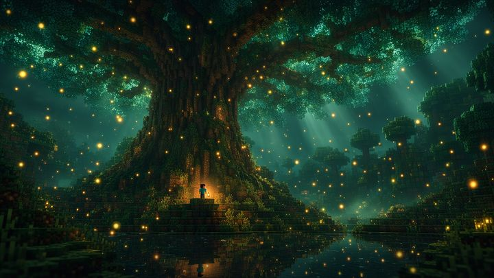
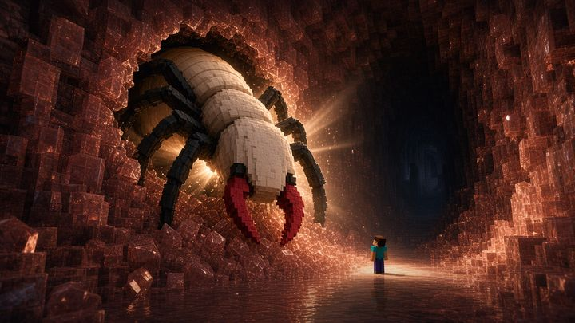
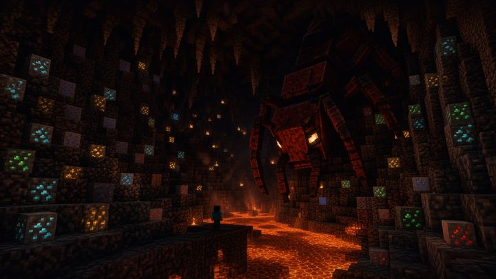
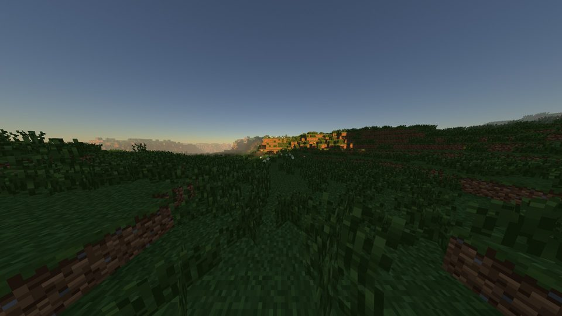
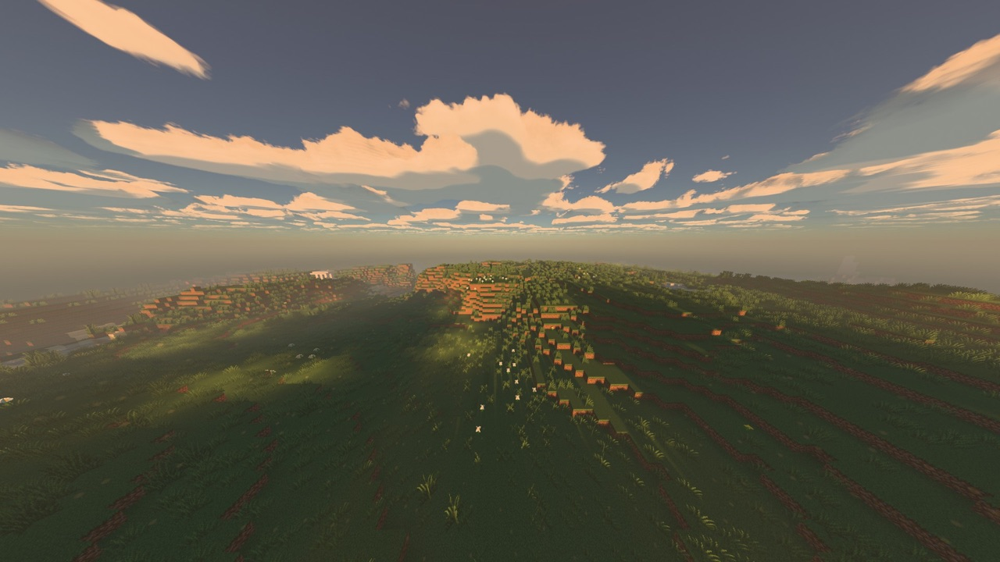

What makes it Quest Forge
Four things no other pack has, all built in the open.
A hand-built questline
Twenty chapters. The numbered ones are the climb, and each opens when a boss dies: Witchery at the Naga, the End at the Hydra, TragicMC at Mobzilla. The rest are how you stay alive on the way up.
Enchantments you gamble for
None of them come from a table. Break the seal on a tome, drag the book onto your gear, and it rolls its own odds. A bad roll can shatter the item. Scrolls tilt the odds.
The full roster → 27Worlds to reach
The Twilight Forest, Witchery's three realms, OreSpawn's six, a dozen from the Legends packs, and the inside of a Compact Machine. Every one has its own painted loading screen.
All twenty-seven → 6Rounds into its own shaders
A shader pack written from scratch for the pack's Angelica client: a physically based sky, real clouds, water with a glitter path, and nights you can read. Each round is judged scene by scene in the Shader Lab.
Light and air →Also from the pack's own mod: proximity voice chat, and a jukebox that plays your own music from wherever it stands.
The pack, page by page
What's in Quest Forge and how it fits together.

Get the pack
Everything a friend needs to play: the download, Java 8, Prism Launcher, the memory settings for your PC, a lighter profile for an older one, and what each refusal from the server means.

Item index
Every item in the pack with its real in-game icon. Search it the way you would NEI, follow recipes and uses, and see which quests ask for each one.

Mod list
All 111 mods sorted into what they add: dimensions, bosses, magic, tech and gear, each with a line on what it actually does.

Worlds
All twenty-seven dimensions with their loading plates: which mod each comes from, and the order the quest book opens them in.

Enchantments
The 81 custom enchantments, the odds on every rarity from Common to Legendary, and the dust and scrolls that tilt a roll.

Ore atlas
Where every ore sits, dimension by dimension. Its figures come from an older mod set and will be measured again before the server opens, so treat them as rough.

Who's online
The server's player list, live: whether it's up, who is on right now, and how to get on the whitelist.

Shader Lab
Where the pack's own shaders get judged. Each round puts two or three versions of one scene side by side; pick one, rate it and say why, and the next round is tuned to your answers.



Near-photoreal light and air on unmistakably Minecraft geometry. Realism comes from the sky, the sun, shadows, water and atmosphere, never from smoothing away the blocks.
The pack runs on the Angelica client and ships with a Low and a Potato preset, so a GTX 1060-class PC is the floor rather than the exception.
- Readable darkness: nights and caves are dark, never black.
- Calm exposure, neutral colour, no orange wash at golden hour.
- Motion blur, depth of field and lens flare are off unless you ask.
- Every frame is our own render; reference photos in the Lab are credited.
The climb
The quest book's numbered chapters, and what has to die before each one opens.
- 19 quests
Start
Wood, iron, diamonds. The overworld still kills people. Open from your first login.
- 27 quests
Base
A side chapter that opens with the first: drawers, iron chests, a handle that picks the whole box up.
- 39 quests
Twilight
Through a flower-ringed pool once you have diamond gear. The Naga, the Lich, the Hydra.
- 412 quests
Witchery
Opens once the Naga is dead, on purpose: you have a real kit now. Altars, poppets and circles.
- 57 quests
Dark Paths
Blood, moon, and the dimensions behind the veil. Opens at the Circle Talisman.
- 613 quests
The End
Not the vanilla End. Opens once the Hydra is dead and the Circle Talisman is made.
- 712 quests
OreSpawn
They came from beyond the void. Opens once you have found the Endstone Temple.
- 812 quests
TragicMC
Doom is a destination, and it has a road. Opens when Mobzilla is dead.
- 94 quests
ProjectE
The capstone, as a ladder: each rung opens at the boss its recipe needs, the Philosopher's Stone at the Lich.
Side chapters
Open from the start and pay in utility and flavour, never the next chapter's power.
In numbers
312 quests in 20 chapters. Boss quests count the kill for the whole party, and retrieval never takes the item from you, so one proof can be handed round. The book is still being rebuilt into acts; what's here is what ships today.
Twenty-seven worlds
The pack's loading screens, one painted for each place it can take you.
Every world, with where it comes from →